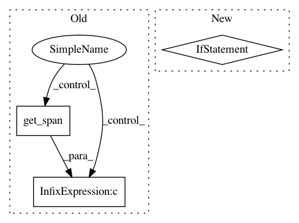

014873c9b91153ce19280762051301beacb7a3e9,src/fonduer/utils/data_model_utils/visual.py,,_get_direction_ngrams,#Any#Any#Any#Any#Any#Any#Any#,230
Before Change
yield ngram
else:
for ts in ngrams_space.apply(sentence):
if bbox_direction_aligned(
bbox_from_span(ts), bbox_from_span(span)
) and not (
sentence == span.sentence and ts.get_span() in span.get_span()
):
yield f(ts.get_span())
After Change
continue
for sentence in span.sentence.document.sentences:
// Skip if not in the same page.
if (
bbox_from_sentence(span.sentence).page
!= bbox_from_sentence(sentence).page
):
continue
if from_sentence:
if (
bbox_direction_aligned(
bbox_from_sentence(sentence), bbox_from_span(span)
In pattern: SUPERPATTERN
Frequency: 3
Non-data size: 3
Instances
Project Name: HazyResearch/fonduer
Commit Name: 014873c9b91153ce19280762051301beacb7a3e9
Time: 2020-05-26
Author: hiromu.hota@hal.hitachi.com
File Name: src/fonduer/utils/data_model_utils/visual.py
Class Name:
Method Name: _get_direction_ngrams
Project Name: HazyResearch/fonduer
Commit Name: 0de3c091c75e36ffb4c12a2048110df37cafb644
Time: 2018-09-20
Author: lwhsiao@stanford.edu
File Name: src/fonduer/candidates/mentions.py
Class Name: Ngrams
Method Name: apply
Project Name: HazyResearch/fonduer
Commit Name: b4ec3ea5a927e5ff3736c180157d8a727b67107d
Time: 2018-09-20
Author: senwu@cs.stanford.edu
File Name: src/fonduer/candidates/mentions.py
Class Name: Ngrams
Method Name: apply